OCI Network Firewallは2022年7月にリリースされた、パロアルトネットワークスの次世代ファイアウォール技術を基に構築されたOCIクラウドネイティブのマネージド・ファイアウォール・サービスです。
主な機能として、URLフィルタリングやSSL/TLS検査などを提供します。
本チュートリアルではOCI Network Firewallの機能の一つであるSSLインスペクションを設定し、簡単なテストにて動作を確認します。
所要時間 :
- 約60分
前提条件 :
- ユーザーに必要なIAMポリシーが割り当てられていること。ポリシーの詳細はドキュメントを参照ください。
- OCIチュートリアル「OCI Network Firewallを構築する 」にて、以下のNetwork Firewallが動作する環境が構築されていること。
- ネットワーク・ファイアーウォール・ポリシーからOCI Vaultサービスへのアクセスを許可するため、以下のポリシーが作成されていること。
Allow any-user to read secret-family in compartment <compartment_ID> where ALL {request.principal.type='networkfirewallpolicy'}アクセスできるネットワーク・ファイアーウォール・ポリシーを限定したい場合は以下のように作成します。
Allow any-user to read secret-family in compartment <compartment_ID> where ALL {request.principal.type='networkfirewallpolicy', request.principal.id='<Network Firewall Policy OCID>'}
注意 :
- 本チュートリアル内の画面ショットは、OCIのコンソール画面と異なる場合があります。
0. はじめに
・実施内容
以下が本チュートリアルで使用する構成図です。 OCI環境を出入りする通信はNetwork Firewallを経由し、Network Firewallによって監視および検査が行われます。
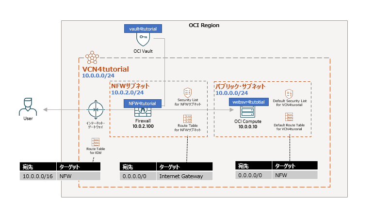
この構成図において、本チュートリアルで作成するリソースはOCI Vaultのみです。そのほかのリソースについては、事前に「OCI Network Firewallを構築する 」を参考に環境をご準備ください。
本チュートリアルでは動作テストとしてOCI内のWEBサーバーに配置したウィルステストファイルに対し、外部からのHTTPS通信がNetwork Firewallによってブロックされることを最終的に確認します。
設定にあたってはこちらのドキュメントも別にご参考にしてみてください。
・SSLインスペクションのモードについて
OCI Network Firewallは次世代ファイアウォールとして、TLSトラフィックを復号して検査する「SSLインスペクション」機能を提供します。この機能は以下の2つのモードに分かれます。
■ SSLインバウンド検査モード
外部クライアントからの通信を受信し、登録済みのサーバー証明書と秘密鍵を使用して復号。通信内容をセキュリティポリシーに基づき検査します。
このモードを利用するには、OCI内部サーバー証明書と秘密鍵をファイアウォールに登録する必要があり、主に外部からOCI内部サーバーへのSSL/TLS通信監視に使用されます。
詳細はこちらをご確認ください。
■ SSL転送プロキシモード
このモードではファイアウォールは、プロキシとして外部サーバーと新たなSSLセッションを確立して通信を仲介します。準備としてクライアントがファイアウォールのCA証明書を信頼するよう設定する必要があり、主に内部ユーザーの通信監視に使用されます。
詳細はこちらをご確認ください。
1. HTTPSの準備
1-1. ネットワークの許可
HTTPS通信を行うため、各ファイアーウォールにて通信を許可していきます。
・firewalld
WebサーバーにSSH接続にてアクセスし、HTTPS通信のためのファイアーウォールを解放します。
sudo firewall-cmd --permanent --add-service=https
sudo firewall-cmd --reload
・セキュリティ・リスト
TCP/443通信をセキュリティ・リストで許可します。
■ Security List for NFWサブネット
ソース・タイプ- CIDRソースCIDR- 0.0.0.0/0IPプロトコル- TCP宛先ポート範囲- 443説明- (任意) HTTPS通信を許可
■ Default Security List for VCN4tutorial
ここではNFWサブネット(10.0.2.0/24)からのHTTPS通信のみを許可していますが、ソースCIDRは「0.0.0.0/0」にしても構いません。
ソース・タイプ- CIDRソースCIDR- 10.0.2.0/24IPプロトコル- TCP宛先ポート範囲- 443説明- (任意) NFWサブネットからのHTTPS通信を許可
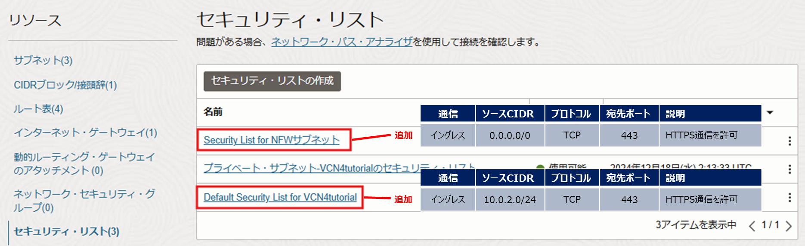
1-2. 証明書を作成するための準備
・OpenSSL
OpenSSLがインストールされていることを確認します。
openssl version
Oracle LinuxではOpenSSLがすでに入っていると思いますが、インストールされてなければ以下コマンドにて準備します。
sudo dnf -y install openssl
・git
自己署名証明書を生成するスクリプトがGitHubにて公開されており、本チュートリアルではこれを使用するため、gitをインストールします。
sudo dnf -y install git
# インストールされたことを確認
git --version
1-3. 証明書の作成
先述の証明書の生成スクリプトのため、GitHubリポジトリをコピーします。
git clone https://github.com/oracle-quickstart/oci-network-firewall.git
oci-network-firewallディレクトリが作成されることを確認します。
/oci-network-firewall/scripts/create-certificate.shに自己署名証明書を生成するスクリプトがありますので、証明書を発行する対象として適当なドメイン名を指定し、以下のコマンドで証明書を生成します。
# 実行権を付与
chmod +x ./oci-network-firewall/scripts/create-certificate.sh
# 証明書を生成
./oci-network-firewall/scripts/create-certificate.sh inbound <ドメイン名>
本チュートリアルではドメイン名をinst.ocitutorial.comとします。独自のドメイン名を指定した場合、この後のドメイン名は適宜お読み替えください。
実行例)
$ ./oci-network-firewall/scripts/create-certificate.sh inbound inst.ocitutorial.com
Creating a inbound Certificate
inst.ocitutorial.com
Generating RSA private key, 4096 bit long modulus (2 primes)
.....................................++++
..........................++++
e is 65537 (0x010001)
Generating RSA private key, 2048 bit long modulus (2 primes)
..+++++
...................................................................................................+++++
e is 65537 (0x010001)
Using configuration from openssl.cnf
Check that the request matches the signature
...
(中略)
...
Write out database with 1 new entries
Data Base Updated
inst.ocitutorial.com-ssl/certs/inst.ocitutorial.com.inb.cert.pem: OK
inst.ocitutorial.com-ssl/certs/inst.ocitutorial.com.fwd.cert.pem: OK
Inbound SSL Certificate: inst.ocitutorial.com-ssl/inst.ocitutorial.com.ssl-inbound-inspection.json
inst.ocitutorial.com-sslディレクトリが作成され、指定した「inst.ocitutorial.com」ドメインに関連するSSL証明書が生成されます。
また、inst.ocitutorial.com-sslディレクトリの構成は以下のようになっています。
inst.ocitutorial.com-ssl
├── certs
│ ├── ca.cert.pem
│ ├── inst.ocitutorial.com.bundle.pem
│ ├── inst.ocitutorial.com.fwd.cert.pem
│ └── inst.ocitutorial.com.inb.cert.pem
├── csr
│ ├── inst.ocitutorial.com.fwd.csr.pem
│ └── inst.ocitutorial.com.inb.csr.pem
├── index.txt
├── index.txt.attr
├── index.txt.attr.old
├── index.txt.old
├── inst.ocitutorial.com.ssl-forward-proxy.json
├── inst.ocitutorial.com.ssl-inbound-inspection.json
├── newcerts
│ ├── 1000.pem
│ └── 1001.pem
├── private
│ ├── ca.key.pem
│ └── inst.ocitutorial.com.key.pem
├── serial
└── serial.old
このうち、
- サーバーの秘密鍵は
inst.ocitutorial.com-ssl/private/inst.ocitutorial.com.key.pem - サーバー証明書は
inst.ocitutorial.com-ssl/certs/inst.ocitutorial.com.inb.cert.pem
にそれぞれ配置されます。この2つのパスはこの後apacheのSSLの設定にて使用しますので、それぞれ控えておいてください。
また、inst.ocitutorial.com-ssl/inst.ocitutorial.com.ssl-inbound-inspection.jsonは、後にNetwork Firewallが参照するためにVaultに格納する内容です。こちらに関してもcatコマンド等で内容を控えておいてください。
2. ApacheのSSL設定
2-1. モジュールのインストール
ApacheをSSLに対応させるモジュールとして、以下コマンドで「mod_ssl」をインストールします。
sudo dnf -y install mod_ssl
/etc/httpd/conf.d/ssl.confが作成されますので、「SSLCertificateFile」と「SSLCertificateKeyFile」に、先ほどのスクリプト実行にてそれぞれ控えておいたサーバー鍵とサーバー証明書のパスに書き換えます。
実行例)
$ sudo vi /etc/httpd/conf.d/ssl.conf
...
# 以下２つのパスを追加
SSLCertificateFile /home/opc/inst.ocitutorial.com-ssl/certs/inst.ocitutorial.com.inb.cert.pem
...
SSLCertificateKeyFile /home/opc/inst.ocitutorial.com-ssl/private/inst.ocitutorial.com.key.pem
...
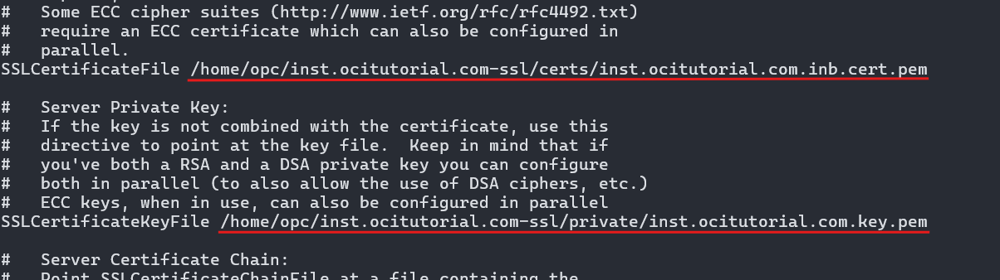
2-2. SELinuxの無効化
mod_sslへのアクセスがSELinuxにより拒否されてしまうため、本チュートリアルではSELinuxを無効化します。
現状でSELinuxが有効化されているかを確認します。
sestatus
/etc/selinux/configを編集し、「SELINUX」の値を「enforcing」から「disabled」へ変更します。
実行例)
$ sudo vi /etc/selinux/config
...
# This file controls the state of SELinux on the system.
# SELINUX= can take one of these three values:
# enforcing - SELinux security policy is enforced.
# permissive - SELinux prints warnings instead of enforcing.
# disabled - No SELinux policy is loaded.
SELINUX=disabled
...
設定を反映させるため、再起動します。
sudo reboot
再びSSHでインスタンスに接続し、SELinuxが無効化されていることを確認します。
sestatus
実行例)
$ sestatus
SELinux status: disabled
2-3. apache HTTP Serverの動作確認
apacheを再起動し、SSLの設定を反映させます。
sudo systemctl restart httpd
実行例)
# 設定を確認
$ apachectl configtest
Syntax OK
# 再起動する
$ sudo systemctl restart httpd
この時点で無事HTTPSで公開されているか、以下のURLへアクセスして確認します。
https://<コンピュートのパブリックIP>/
自己署名証明書のためブラウザから警告がでますが、HTTPS通信でアクセスできていることを確認できます。
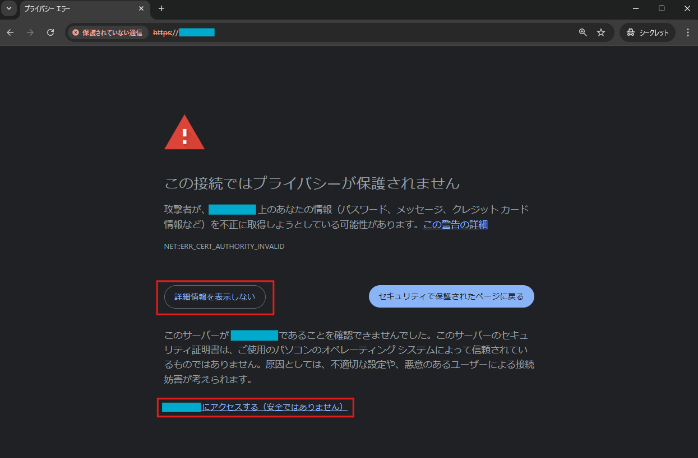
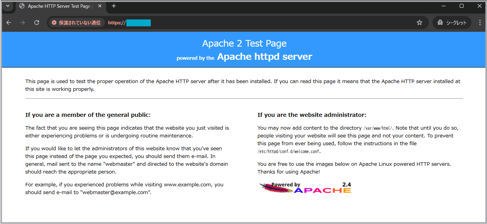
以下のURLにアクセスすると、暗号化のためにeicarファイルがブロックされていないことを確認することができます。
https://<コンピュートのパブリックIP>/eicar.html
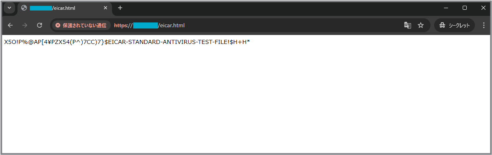
また一方で、http://<コンピュートのパブリックIP>/eicar.htmlとHTTPでアクセスするとブロックされることもわかります。
3. OCI Vaultの準備
TLS通信を復号するため、Network Firewallはサーバー証明書を参照する必要がありますが、この証明書の保存先としてOCIの鍵管理サービス「OCI Vault」を使用します。
3-1. 作成するシークレットの内容の準備
Network Firewallが参照するシークレットは以下のようなJSON形式である必要があります。
{
"caCertOrderedList" : [
"ROOT_CERT01_PEM_CONTENT",
"INTERMEDIATE_CERT01_PEM_CONTENT",
"INTERMEDIATE_CERT02_PEM_CONTENT",
],
"certKeyPair": {
"cert" : "LEAF_CERT_01_PEM_CONTENT",
"key": "PRIVATE_KEY_01_PEM_CONTENT"
}
}
手順では証明書を生成した際にinst.ocitutorial.com-ssl/inst.ocitutorial.com.ssl-inbound-inspection.jsonとして準備されています。この後の手順にてシークレットとしてVaultに保存しますので、あたらめて内容を手元のメモ帳などに控えていることをご確認ください。
3-2. Vaultの設定
・Vaultの作成
Vaultを作成します。 OCIコンソール画面左上のメニューボタンより、[アイデンティティとセキュリティ] → [キー管理とシークレット管理] → [ボールト] と移動、[ボールトの作成]をクリックします。
作成画面にて以下の項目を入力し、[ボールトの作成]をクリックします。
コンパートメントに作成- <任意のコンパートメントを選択>名前- vault4tutorial
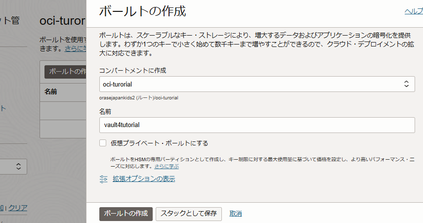
・マスター暗号鍵の作成
暗号化のためのマスター鍵を作成します。
コンパートメントに作成- <任意のコンパートメントを選択>保護モード- HSM名前- MEKキーのシェイプ: アルゴリズム- AESキーのシェイプ: 長さ- 256ビット
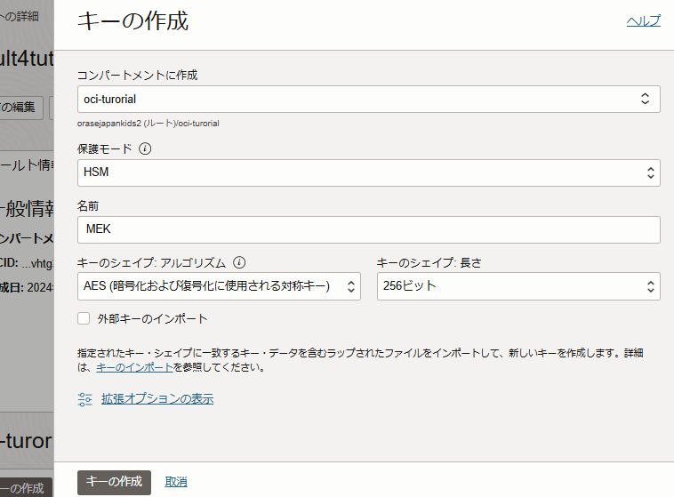
・シークレットの作成
シークレットとして、控えておいたJSONファイル「inst.ocitutorial.com.ssl-inbound-inspection.json」の中身を張り付けます。
-
名前- secret_websvr4tut 暗号化キー- MEK (作成した暗号化キーを選択)[手動シークレット生成]を選択-
シークレット・タイプ・テンプレート- プレーン・テキスト シークレット・コンテンツ- <JSONファイルの中身をペースト>
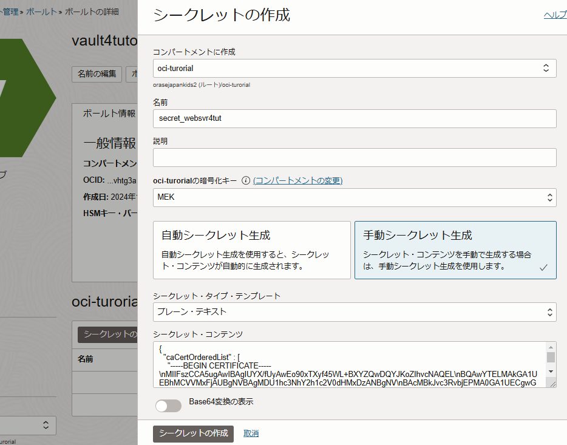
4. Network Firewallの設定
4-1. ポリシーの作成
「OCI Network Firewallを構築する」チュートリアルにて、「nfw_pol_tutorial」ポリシーが適用されていることを前提とし、このポリシーをクローンして新しくポリシーを作成します。
ネットワーク・ファイアウォール・ポリシー詳細画面より、[ポリシーのクローニング] をクリックし、以下の項目でポリシーを作成します。
名前- nfw_pol_sslinb_tutorialコンパートメントに作成- <任意のコンパートメントを選択>
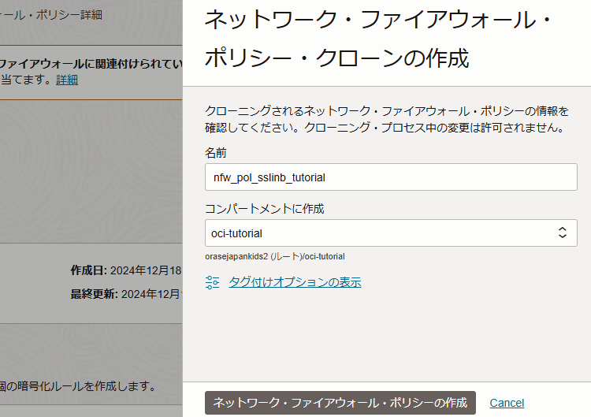
4-2. ポリシーの設定
作成した「nfw_pol_sslinb_tutorial」ポリシーの詳細画面に移ります。
・復号化プロファイル
「復号化プロファイル」セクションより、[復号化プロファイルの作成] ボタンから以下を作成します。
名前- ssl_inb_profile復号化プロファイルのタイプ- SSLインバウンド検証
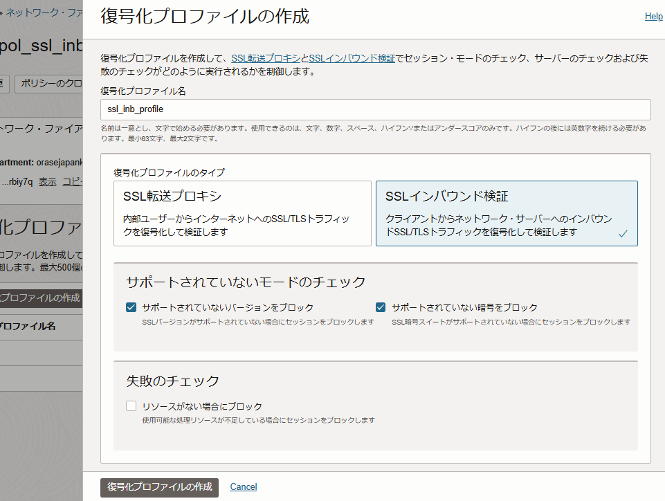
・マップされたシークレット
「マップされたシークレット」セクションより、[マップされたシークレットの作成]ボタンから以下を作成します。
-
マップされたシークレット名- secret_sslinb_websvr4tut マップされたシークレット・タイプ- SSLインバウンド検証ボールト- vault4tutorialシークレット- secret_websvr4tutバージョン番号- 1
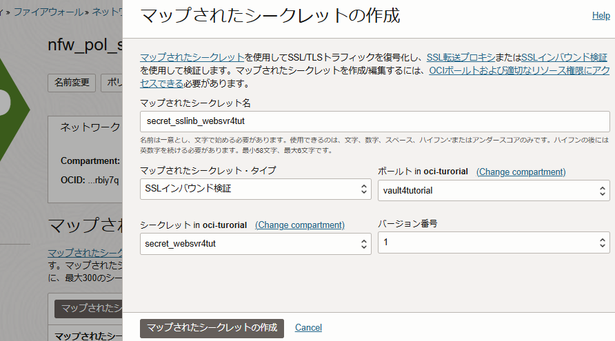
・アドレス・リスト
OCI内のサーバー（今回はwebsvr4tutorial）のアドレスを管理するリストを作成します。
「アドレス・リスト」セクションより、[アドレス・リストの作成]ボタンから以下を作成します。
名前- address_websvr4tutソース・アドレス- 10.0.0.10 (WebサーバーのプライベートIPアドレス)
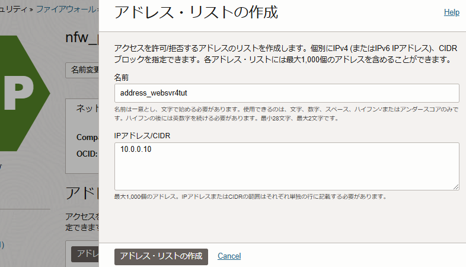
・復号化ルール
「復号化ルール」セクションより、[復号化ルールの作成]ボタンから以下を作成します。
-
名前- decryptrule_sslinb_websvr4tut - 一致条件
ソース・アドレス-宛先・アドレス- 「address_websvr4tut」を選択して追加
- ルール・アクション
アクション- SSLインバウンド検証を含むトラフィックを復号化復号化プロファイル- ssl_inb_profileマップされたシークレット- secret_websvr4tut_sslinb
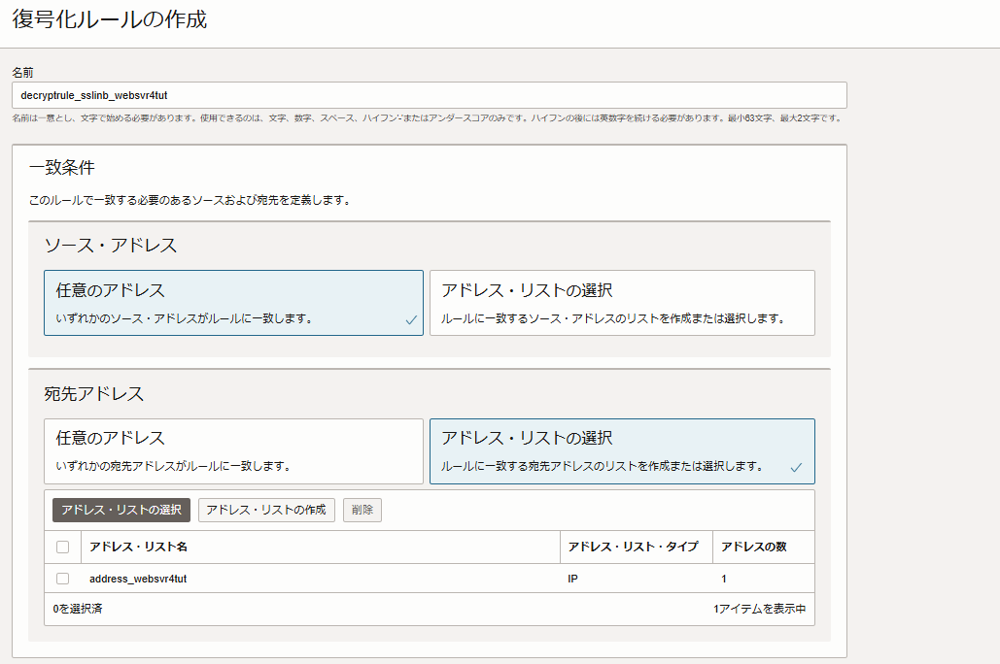 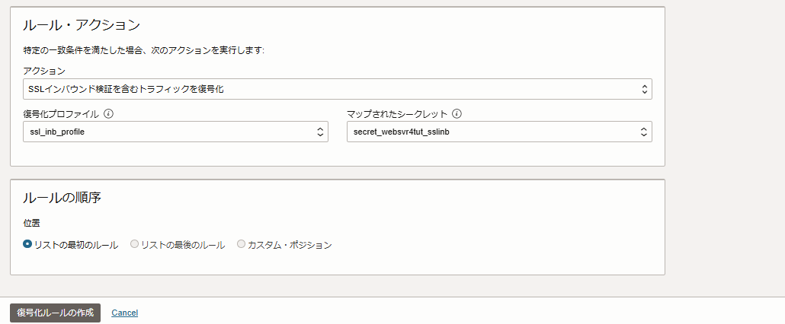
4-3. Network Firewallへポリシーの適用
設定した「nfw_pol_sslinb_tutorial」ポリシーをNetwork Firewallに適用します。
Network Firewall詳細画面の[編集] ボタンをクリック、「nfw_pol_sslinb_tutorial」ポリシーを選択し、新しいポリシーを適用します。
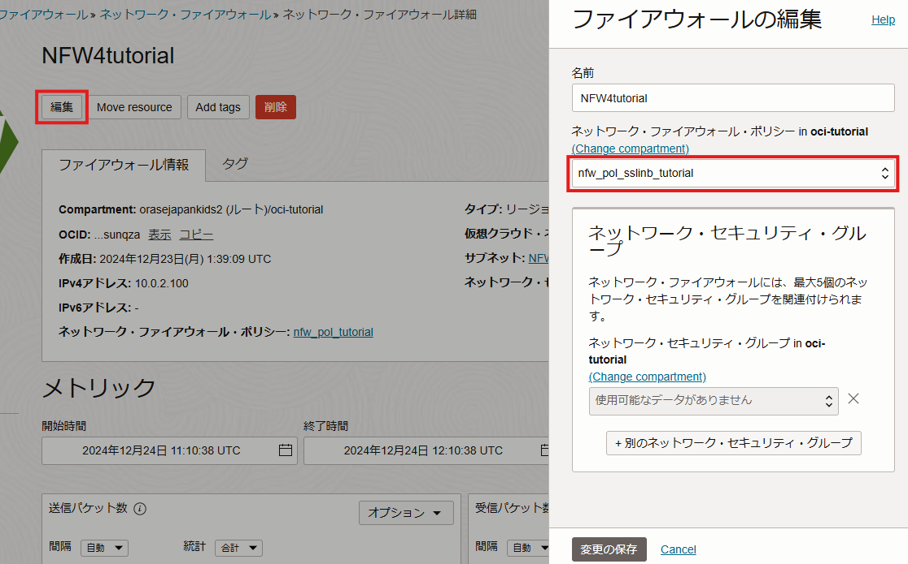
5. 動作を確認する
5-1. テストサイトにアクセスする
以下のURLへアクセスし、無事アクセスできることを確認します。
https://<コンピュートのパブリックIP>/
自己署名証明書のため警告がありますが、テストページにはHTTPS通信ができていることを確認できます。
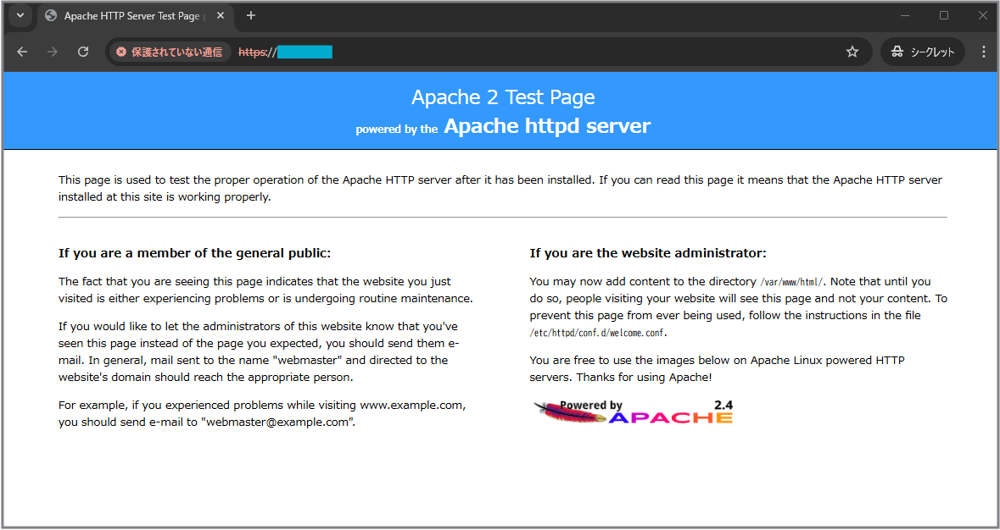
同様に以下のURLでeicarファイルを配置したページにアクセスします。
https://<コンピュートのパブリックIP>/eicar.html
Network FirewallがSSL通信を復号できるようになったため、eicarファイルが検知され、通信がブロックされたことが確認できます。
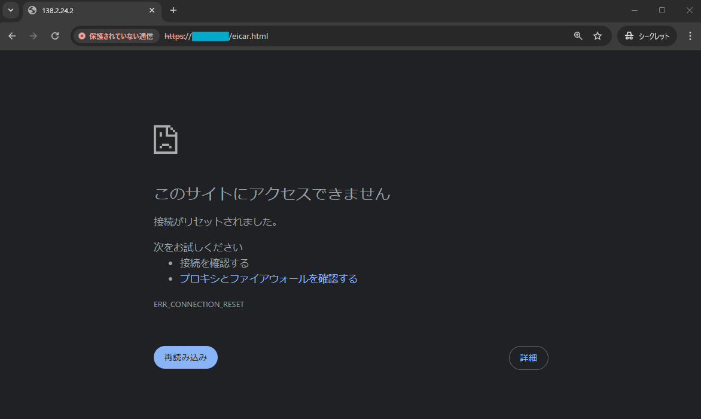
5-2. ログを確認する
Firewallがeicarファイルへのアクセスを検知したログを確認します。
Network Firewallの脅威ログ（Threat Log）を有効化すると、検知されたeicarファイルはこの脅威ログより以下のように確認できます。
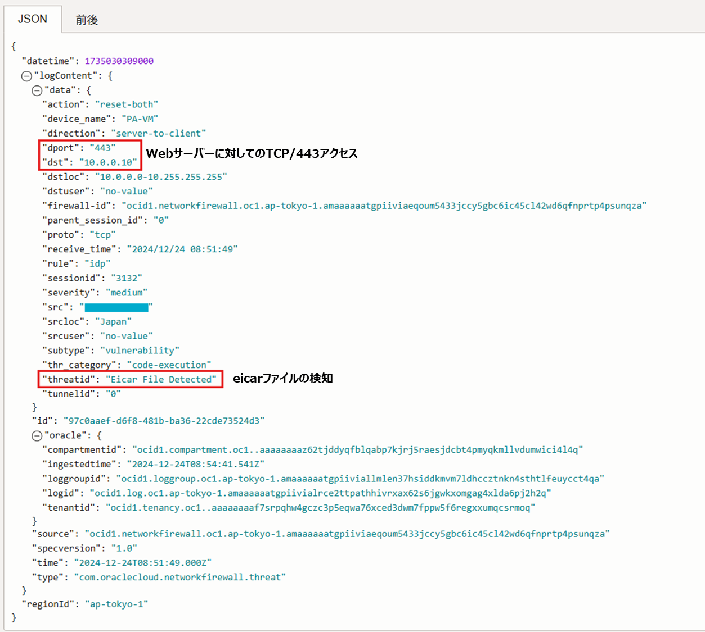